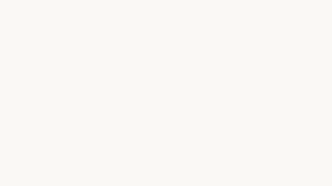

Colin Dunn is a product designer living in San Francisco.

- Navigator
- October 2016 – Present
- Leading product design at Navigator. Navigator brings collaborative agendas, files, notes and action items to every meeting on your calendar.
Previously at
- Dropbox
- January 2014 – September 2016
- Product designer on Paper, Carousel, Badge, and Mailbox. Worked on emerging products as part of a small, design-led research and development group. Also embedded in cross-functional product teams.
- Facebook
- November 2012 – December 2013
- Product designer working on Graph Search. I prototyped user interface concepts and presented regularly to leadership. Worked closely with engineering and product management to explore product concepts and implement designs.
- Lore
- June 2012 – October 2012
- Ed-tech startup. Collaboration software for students and teachers. Our product attracted more than 100k students and professors from Ivy League colleges in the first year. I worked on product, marketing and brand until company was acquired by Noodle.
- Pentagram
- May 2010 – July 2011
- Graphic Design apprenticeship with Abbott Miller. Worked on Guggenheim identity project, editorial illustrations for the New York Times, environmental graphics, exhibition design, and wayfinding for the Barnes Foundation, and website design and development for 2wice Arts Foundation.